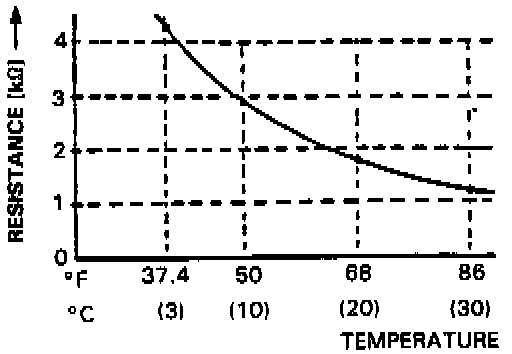

Operation CHARM
: Car repair manuals for everyone.
Home
>>
Acura
>>
1988
>>
Legend Sedan V6-2675cc 2.7L SOHC FI
>>
Repair and Diagnosis
>>
Sensors and Switches
>>
Sensors and Switches - HVAC
>>
Evaporator Temperature Sensor / Switch
>>
Specifications
>>
Pressure, Vacuum and Temperature Specifications
Pressure, Vacuum and Temperature Specifications
THERMOSTAT SWITCH CONTINUITY
Cutoff
1.5 - O.5°C (35 - 33°F)
Cut in
2.5 - 5°C (36 - 41°F)
